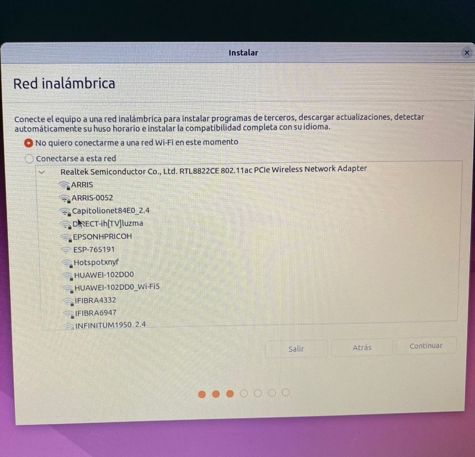

LINUX
INTRODUCCIÓN
Ubuntu es un sistema operativo basado en Linux. Se presenta como una alternativa a otros sistemas operativos como Windows y macOS. A continuación se hablará sobre sus diferentes versiones y la razón de su creación entre otros datos.
INFORMACIÓN
¿Qué es Ubuntu? Ubuntu es conocido por su estabilidad y seguridad. Como un sistema de código abierto, cualquier desarrollador puede examinar, modificar y distribuir su código. Este sistema operativo es una excelente opción para aquellos que buscan tener más control sobre su software. Fue creado a principios del año 2004 en su versión 4.10 llamado “Warty Warthog”, esta distribución de Linux fue basada en otra de ellas llamada Debian.
CAMBIOS DE ESTA VERSIÓN
Seis meses después de Ubuntu 22.04.3 LTS, el lanzamiento puntual de Ubuntu 22.04.4 LTS está aquí como un medio de instalación actualizado dirigido a aquellos que desean implementar la serie de sistemas operativos Ubuntu 22.04 LTS (Jammy Jellyfish) en computadoras nuevas sin tener que descargar cientos de paquetes actualizados de los repositorios después de la instalación.
Las novedades de Ubuntu 22.04 LTS ‘Jammy Jellyfish’ son las que fueron, incluyendo componentes como GNOME 42, KDE Plasma 5.24 LTS, Xfce 4.16, MATE 1.26 o LXQt 0.17, amén del grueso de los paquetes que componen el sistema; pero hay otros que sí se renuevan, como el kernel Linux 6.5 o la pila gráfica de Mesa 23.2, traídos directamente desde la versión anterior de la distro, Ubuntu 23.10, a través del Hardware Enablement Stack.
Nuevas características y mejoras de Ubuntu 22.04 LTS
Ubuntu 22.04 LTS desbloquea la innovación para industrias con estrictos requisitos de seguridad de la infraestructura, como las telecomunicaciones y la automatización industrial, apoyando su transformación digital.
Linux Kernel 5.15 LTS | Kernel en tiempo real
Ubuntu 22.04 LTS está basado en el kernel de Linux 5.15, con soporte técnico extendido. Sin embargo, los equipos certificados de nueva generación también pueden optar por el kernel de Linux 5.17. Además, Canonical ha anunciado que el kernel en tiempo real está disponible en beta para proporcionar rendimiento, latencia ultra baja y seguridad para infraestructuras críticas.
GNOME 42
Esta nueva versión LTS incluye la nueva versión de GNOME como entorno de escritorio por defecto, GNOME 3.42. Esto implica muchos cambios visuales y permite una mayor personalización. Estas son algunas de las nuevas características de GNOME 42:
- Mejoras de rendimiento.
- Protocolo de Escritorio Remoto (RDP) disponible para compartir escritorios de forma remota.
- Nueva herramienta de pantallazos, que incluye grabación de pantalla.
- Nuevos ajustes multitarea.
- Más control sobre la disposición de los espacios de trabajo.
- Servidor gráfico Wayland por defecto para la mayoría de sistemas sin tarjeta gráfica NVIDIA.
- Versión 2.06 de GRUB.
Mejoras de Seguridad
A nivel de seguridad, Ubuntu 22.04 LTS incluye las siguientes actualizaciones:
- nftables como backend por defecto para el firewall.
- SSH-RSA desactivado por defecto en OpenSSH.
- La información de CVE y vulnerabilidades relacionadas para versiones LTS se publican en un stream OVAL y se integra en herramientas de auditoría y escaneo estándar del sector.
- Rust para programación a nivel de sistemas con seguridad de memoria.
- OpenSSL actualizado a la versión 3, que incluye nuevos algoritmos criptográficos.
Actualizaciones
Esta nueva versión incluye muchas actualizaciones de versiones como:
- GCC 11.2.0
- Go 1.18
- LibreOffice 7.3
- LLVM 14
- OpenJDK 18
- OpenSSL 3.0
- Perl 5.34.0
- PHP 8.1
- Python 3.10
- Ruby 3.0
- Rust 1.58
- Systemd 249
- Thunderbird 91
Ubuntu Server 22.04
En cuanto a HA y clústering, Ubuntu Server 22.04 incluye las siguientes actualizaciones:
- Corosync 3.16
- Pacemaker 2.1.2
- Resource agents 4.7.0
- Fence agents 4.7.1
En cuanto al tiempo de ejecución de contenedores, incluye las siguientes actualizaciones:
- Containerd 1.5.9
- Runc 1.1.0
Ubuntu Desktop 22.04
Esta nueva versión incluye grandes mejoras a nivel de usabilidad, batería y rendimiento gracias a la actualización a GNOME 42. Esto permite, por ejemplo, desactivar las animaciones para mejorar el rendimiento.
Además, Ubuntu Desktop 22.04 viene con:
- Mozilla Firefox incluido como un paquete Snap por defecto, con el objetivo de simplificar el mantenimiento del navegador en las distribuciones.
- Personalización de la experiencia de escritorio. Esto incluye ajustes para cambiar, por ejemplo:
- El color de contraste.
- La posición de los iconos de escritorio.
- El aspecto y comportamiento del dock.
Requisitos del Sistema Operativo
- Procesador de doble núcleo de 2 GHz
- 4 GiB de RAM (memoria del sistema)
- 25 GB de espacio en el disco duro (o dispositivo USB, tarjeta de memoria o unidad externa, pero consulte LiveCD para conocer un enfoque alternativo)
- VGA capaz de una resolución de pantalla de 1024 × 768
- Ya sea una unidad de CD / DVD o un puerto USB para el medio de instalación
- El acceso a Internet es útil
- Recomendado: Tarjeta de video con capacidad de aceleración 3D con al menos 256 MB
Seguridad
La seguridad del sistema operativo Linux es una de las mejores. Además, este sistema operativo es poco propenso a ciberataques. Los ataques dirigidos a Linux son poco usuales. Si bien, es cierto que existen algunos, pero en comparación por ejemplo con Windows son mucho menos.
Cómo Mitigar los Riesgos – Seguridad del Sistema Operativo Linux
- Garantizar que los firewalls estén configurados de forma correcta y los puertos no utilizados, bloqueados.
- Controlar las actualizaciones de seguridad del sistema.
- El software utilizado debe ser fiable, los canales de actualización deben estar cifrados y proteger las claves con contraseñas seguras.
Para los usuarios, Linux es el gran desconocido. Pero sin embargo, no lo es para los profesionales de la ciberseguridad. Las empresas tecnológicas están muy interesadas en contar con profesionales cualificados especializados en Linux.
Identificación de Usuario y Contraseña – Primer Control de Seguridad
La solicitud de identificación de usuario y de la contraseña constituye el primer control de seguridad para acceder al sistema. Las contraseñas cuanto más largas mejor. Las contraseñas en Linux deben tener una longitud mínima de seis caracteres.
Detectar Cuentas que Puedan Suponer una Amenaza
La seguridad incluye, igualmente, detectar aquellas cuentas que pueden suponer un problema para la integridad del sistema, como:
- Cuentas sin contraseñas
- Cuentas no utilizadas
- Cuentas predeterminadas creadas por softwares con contraseña por defecto
- Cuentas de invitados, donde personas ajenas al sistema tienen permiso para acceder
- Cuentas de grupo, en las que muchos conocen las contraseñas, y esto podría ser muy peligroso
Cuidado al Descargar e Instalar Software
Descarga aplicaciones solo de fuentes confiables y verifica las firmas digitales para evitar software malicioso.
Proceso de Instalación
- Preparación del BIOS: Encender el dispositivo y entrar al BIOS (en este caso con F10).


Nos dirigimos a la pestaña de “System configuration”, Cambiamos el idioma a español y nos ubicamos en la opción de “Opciones de arranque”.

Dentro de esta opción nos dirigimos a la opción de “Orden de arranque UEFI” y le damos prioridad poniendo al inicio de la lista la opción de “Disquete USB en clave / unidad de disco duro

Para este punto ya se tendría que tener la memoria usb con el sistema operativo ya instaladaloy colocarla en el dispositivo, y una ves ya conectada solo tendremos que dar “f10” para guardar los cambios hechos en el bios y comenzar la instalación
Seleccionamos la primera opción para comenzar la instalación.
Aquí seleccionamos el idioma y elegimos entre si probar Ubuntu o instalarlo, le damos a la opción de instalar.
Elegimos la distribución del teclado que tengamos.
Elegimos nuestra red wifi para la instalación.
Elegimos el tipo de actualización, si queremos que nos instale software o una instalación simple con los el navegador.
Seleccionamos el tipo de instalación, en este caso borrar disco e instalar Ubuntu para una instalación limpia.
Seleccionamos la región para ajustar la hora.

Aquí ya inicia el proceso de instalación.
Cuando salga esta ventana esperamos a que reinicie y a que nos de la vn
Versiones del Sistema Operativo
Conclusión
Ubuntu es un sistema operativo que tiene una interfaz gráfica minimalista y simple, además de tener LibreOffice, lo cual ofrece una alternativa a Microsoft Office por ser gratis y ser compatible con estos archivos. También el hecho de no requerir de muchos recursos lo hace apto para computadoras con bajos recursos. Sin duda, este es un sistema operativo bastante completo y de manejo fácil si se usa para trabajo.
BIBLIOGRAFÍA
Estas son las Novedades de Ubuntu 22.04 LTS (Jammy Jellyfish) ‣ Infotips. (s.f.). Infotips ‣ Manuales y tutoriales de apoyo para las TIC. Ubuntu 22.04 LTS (Jammy Jellyfish). (s.f.). Stackscale. Linuxsc: Linux Howtos, Tutorials, Tricks, Guides, Scripts and Ideas. (s.f.). Linuxsc: Linux Howtos, Tutorials, Tricks, Guides, Scripts and Ideas. Requisitos mínimos de Ubuntu 22.04. (s.f.). Linux Tips. Sistema operativo Linux - seguridad - Mantenimiento Informático Madrid. (s.f.). Mantenimiento Informático Madrid.